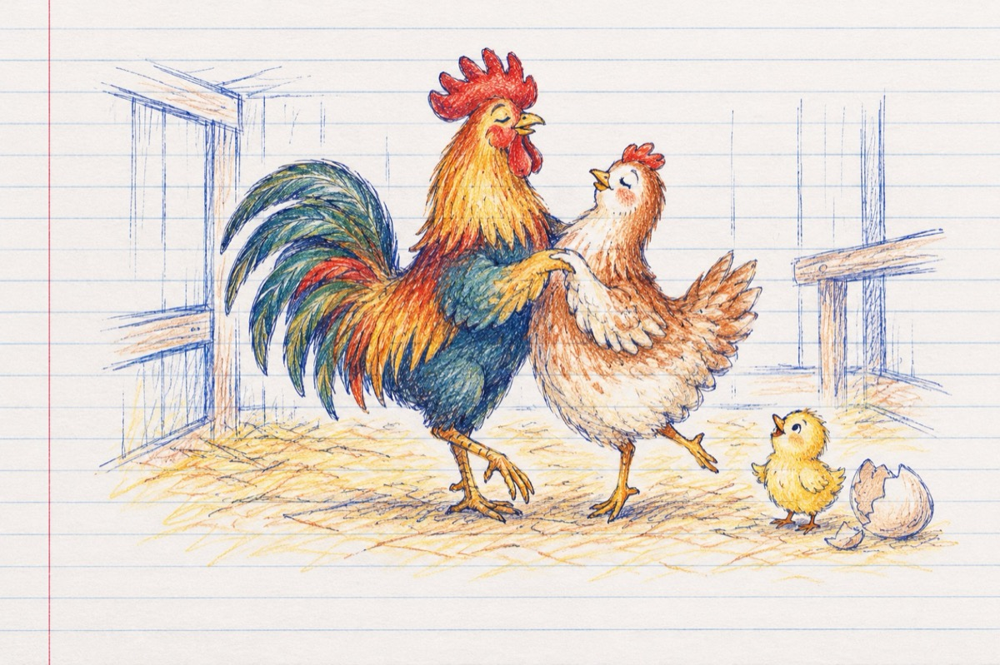

Sărbătoare-n coștereață
Cucurigu s-aude-n coștereață
Hai, treziți-vă din somn!
Astăzi va fi o nouă dimineață
Este sfânta noapte de revelion!
E distracție în coștereață
Iar o moțată făcut-a primul ou!
Și un cocoș cu-o puică mai isteață
Le-a oferit un vals ca prim cadou!
Fanfara de cocoși cu toți din sat
Cântau în pură armonie
Iar pe la Bobotează s-a-ntâmplat
Oul a ieșit din cochilie
O mamă cloșcă și câteva moțate
Și puiuțul cu motiv de bucurie
S-au strâns în jurul mesei cu bucate
Și-a început o mare veselie
Ca invitați sunt un curcan și-o curcă
Și rațele cu pașii de tangou
Pân' și Grivei în joacă se. aruncă
Uitând că e. pe. post de câine rău!
O coțofană vrând. să facă-o glumă
S-a repezit. în zbor să-l ia pe "Prințișor
Dar motănel, făcând spume la gură
Sărit-a de pe-acoperiș în ajutor!
Vasile Groza